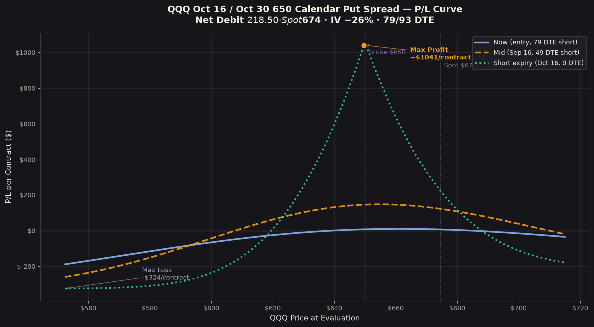

P/L Curve — Three Time Horizons

Max Profit
~$1,058
at $650 on Oct 16 (est.)
Max Loss
$218.50
defined risk = net debit
Net Debit
$2.19
1 calendar put spread · $218.50 total
Spot / IV
$674.42
QQQ @ entry · IV ~26%
Why This Structure
A put-side calendar at a near-ATM strike — the structure expresses the view that QQQ will spend time around $650 over the next 79 days. The trade collects front-month put premium while funding the longer-dated put, with a defined-risk profile bounded by the net debit.
Why a calendar over a diagonal? The diagonal (different strikes + different expiries) would add intrinsic value to the long leg and tilt the trade more directional. The same-strike calendar is the more pure theta vehicle — it doesn't care which direction QQQ moves, only that it ends up near a strike at short-expiry.
Why a put calendar over a call calendar? QQQ is currently in a pullback ($674, off ~7% from June highs near $725). The 14-day front-month IV is barely above the 93-day back-month IV (26.1% vs 26.2%) — flat term structure. Put calendars work when the underlying is expected to chop sideways, especially when spot is near a strike and there's no obvious directional catalyst. A call calendar would require QQQ to rally to a higher strike; a put calendar accepts the current chop and profits if QQQ spends time near $650.
Why not a put vertical? A 650/600 or 650/625 vertical would express the bearish view (QQQ falls below $650) at lower debit. But verticals need QQQ to actually reach the lower strike for max profit. The calendar's tent-shaped peak is centered at $650 with positive P&L on either side of it — a much wider profit zone.
Why $650 strike specifically? $650 sits $24 below current spot. At 26% IV over 79 days, the σ-distance is roughly 0.5σ — within the playbook's standard 0.3–0.5σ band for short-duration calendars. The strike is close enough to spot to capture meaningful time-value asymmetry between the two legs, but not so close that the back-month has only modest residual TV. Picking $650 instead of $700 captures the current pullback reality (QQQ has already corrected 7%) without going so deep OTM that the back-month TV collapses.
Thesis
- Why QQQ, why now: QQQ has corrected ~7% from June highs ($725 → $674). The correction has been orderly; structural drivers (AI capex, mega-cap concentration, low-vol tech regime) are intact but the index needs a base. IV at 26% is moderate — not cheap (which would favor premium-selling) but not panic (which would favor long-vol). The flat term structure (front 26.1% / back 26.2%) suggests the market isn't pricing near-term event risk on either side — the calendar captures the chop.
- Why a put calendar over alternatives: A long 650P Oct 16 alone costs $1,901 (more than 8× the calendar's debit) and would be the pure directional put. A long 650P Oct 30 alone costs $2,120 with the same directional exposure but more theta bleed. A 600/650 put vertical costs ~$2.50 debit with max profit $47.50/share but requires QQQ to fall below $600 by Oct 16, not just reach $650. The calendar wins on three axes: defined risk, theta harvest, and a wider profit zone (any QQQ close between roughly $618 and $687 at Oct 16 produces positive P&L).
- Why not the existing QQQ call calendars ($800 / $850, opened 2026-07-24): Those are 18-month duration calendars expressing a 18-month recovery view to $800-$850. This new put-side calendar is a 79-day duration trade expressing the near-term chop-then-base view at $650. They have completely different time horizons — one is structural recovery, the other is tactical mean-reversion. They don't overlap in payoff or thesis.
- Why 14-day calendar duration: 14 days is the sweet spot for short-duration calendars on QQQ — long enough for the back-month to retain meaningful residual TV at short expiry, short enough for the front-month to decay meaningfully in the holding period. A 30-day calendar (short Oct 30 / long Nov 20) would have less front-month decay per day; a 7-day calendar would have the back-month TV too thin to justify the debit.
Risk
| Risk | Magnitude | Mitigation |
|---|---|---|
| QQQ rallies past $700 at Oct 16 | Up to ~$190 loss above $720 (long leg residual TV erodes to near zero) | Stop before $700; the calendar is asymmetric above the strike — short expires worthless but long loses TV faster than expected |
| QQQ stays well below $617 at Oct 16 | Up to ~$325 loss (long leg intrinsic ≈ short leg intrinsic, plus debit) | Acceptable; this is the trade not playing out. Stop at 2× debit ($437) cost to close |
| QQQ stays at $674 (no move, no chop) | ~$10 loss initially, then theta harvest builds P&L over time | This is the *thesis* playing out — QQQ stays near $650. Theta should accumulate $1.37/day in our favor. Patience. |
| IV crush (long-term IV decline) | ~$10.37/contract per 1% IV drop | Position is net long vega; rising IV helps, falling IV hurts. QQQ IV typically stays in 20–35% range; sustained IV collapse to <20% would hurt the position materially |
| Early assignment risk on short ITM put | Currently low (short is $24 ITM, no ex-div on QQQ before Oct 16) | QQQ does pay ~0.5% annual dividends; an ITM short put with dividend risk could see early assignment to capture the dividend. Monitor ex-div dates (none between now and Oct 16 for QQQ, but verify before settlement). |
| Liquidity (QQQ is highly liquid, low risk) | Front-month bid/ask ~$0.25, back-month ~$0.30 | QQQ is one of the most liquid underlyings; spreads are tight. No concerns. |
Position Payoff at Three Time Horizons
The chart above shows the position's P/L as a function of QQQ's price at three evaluation windows: now (entry, 79 DTE short), mid-life (~30 DTE before short expiry = Sep 16, 2026), and at short-leg expiry (Oct 16, 2026). The three curves diverge in a classic short-duration calendar pattern — the now-curve (blue solid) is shallowly tent-shaped with the strike centered, the mid-curve (orange dashed) is steeper as the front-month theta accelerates, and the short-expiry curve (green dotted) is the tallest tent peaking exactly at the $650 strike.
Read the chart:
- Spot $674.42 sits $24 above the strike. At the current spot, the calendar is near-flat (~$0 P/L on the now-curve, building toward positive via theta as the front-month decays). At Oct 16 expiry at the current spot, the strategy shows ~$640 P/L per contract — front expires worthless ($0), long has ~$8.58/sh residual TV, minus $2.19 debit = $6.39/sh × 100 = $639/contract.
- The peak (~$1,058) sits exactly at $650 at short-leg expiry. That's where the short leg expires worthless and the back-month retains 14 DTE of time value at the strike ($12.77/share = $1,277/contract, minus $218.50 debit = $1,058.34/contract).
- The downside tail (QQQ crashes through $617) bottoms at ~−$325/contract at $550. Below the lower breakeven, both legs are deep ITM; short pays out more intrinsic than long captures (because the long's value converges to the same intrinsic), and the debit is the loss.
- The upside tail (QQQ rallies past $687) crosses zero around $687 and bottoms at ~−$190/contract at $720. Above the upper breakeven, the long leg loses TV faster than the debit recovers.
Tent shape asymmetry: The upside tail is shallower and the downside tail is steeper. This reflects the put skew — OTM puts trade richer than OTM calls at the same distance, so the downside back-month residual TV decays faster than the upside. The breakeven window (~$618 to $687) is wider on the upside (+$37) than the downside (−$32) — the structure tolerates a moderate rally better than a moderate selloff.
Greeks Snapshot (Black-Scholes at entry)
| Greek | Per-contract value | Interpretation |
|---|---|---|
| Delta (Δ) | −0.48 | Mild net put delta. QQQ needs to fall ~$0.50 from here for the structure to gain $1 of delta-neutral P&L. |
| Gamma (Γ) | −0.0338 | Slight net short gamma. Position loses value if QQQ moves sharply in either direction intraday (small effect at this scale). |
| Theta (Θ) | +$1.37/day | Net positive theta — this is the trade's edge. Front-month decays faster than back-month at this DTE bucket. |
| Vega (ν) | +$10.37 per 1% IV | Net long vega. Structure wants IV to rise to add value; a sustained IV crush hurts. |
| Rho (ρ) | −$10.66 per 1% rate | Mild short rate sensitivity. Fed policy moves during the holding period could affect the trade. |
Per-leg breakdown (BSM at entry):
Strike Sign Price Delta Gamma Theta Vega Rho
650P -1 $19.01 -0.330 +0.0044 -0.159 +1.136 -0.522
650P +1 $21.195 -0.335 +0.0041 -0.146 +1.240 -0.629
─────
Net: -0.0048 -0.0003 +0.0137 +0.1037 -0.1066
Sum the rows by sign to get the per-share totals, then multiply by 100 for per-contract values shown above.
Intraday Setup (entry)
Pre-market context: QQQ traded flat-to-down overnight after yesterday's −0.8% close. Futures pointed to a modestly lower open; no major economic data on the calendar for July 29. The 14-day front-month put IV (26.1%) was slightly elevated relative to the back-month (26.2%) — nearly flat, slight front richness. This is a textbook environment for a put-side calendar: a chop-zone setup with no directional catalyst and a balanced term structure.
Entry signal: At 3:27 PM ET, I checked the OptionStrat chain at the $650 put strike for both Oct 16 and Oct 30. The basis prices were $19.01 (short) and $21.195 (long), netting $2.185 debit. The implied vol surface gave me ~26% on both legs — within the BSM solve tolerance (~$19.94 chain mid implied 27%, ~$22.07 implied 26.9%, both slightly higher than basis, suggesting a small amount of slippage is expected at fill).
Execution: Both legs entered simultaneously via the broker at the OptionStrat basis prices (a single combined order through the strategy builder). Slippage should be minimal — QQQ options are highly liquid.
Size check: Total debit $218.50 = 2.19% of $10k trade-book allocation for QQQ short-duration calendars. Within the playbook's 3% per-trade cap (see Playbook § Position Sizing).
Management Plan
The standard calendar management rule applies, with adjustments for the 14-day calendar duration:
| Trigger | Action |
|---|---|
| 50% of max profit (~$529/contract) | Close the trade. Lock in half the potential upside; the back-month residual TV is hard to predict beyond this point. |
| QQQ within ±$5 of $650 at Oct 16 | Hold if 50% not hit; the tent peak is the most profitable spot to ride to expiry. |
| QQQ outside ±$35 of $650 at Oct 16 | Close at market, even if a small loss. The structure has lost its tent-shape edge. |
| 5 days before short expiry (Oct 11) | Force-close if not at the 50% target. Avoid gamma/assignment risk into the last week. |
| 2× debit stop ($437/contract cost to close) | Hard stop. The trade is no longer a calendar at this point — it's directional risk. |
| QQQ above $720 at any time | Close the position. The back-month residual TV erodes to zero above $700; the structure has no edge. |
| QQQ below $580 sustained | Close at market. The structure has gone deep ITM and the loss is approaching the debit. |
| IV crush to <18% sustained for 5+ days | Reduce position size or close. Long vega exposure is no longer favorable. |
| Pre-FOMC / Pre-CPI (Sep 16-17, Oct 14-15) | Hold through event unless IV is below 20% entering the event. Calendar structures benefit from event IV expansion. |
Adjustment idea (advanced): If QQQ moves substantially in the first 2 weeks and stays there, the calendar can be rolled forward (close both legs, reopen at the next pair of expirations 30-60 days out). This converts a chop trade into a longer-duration theta position with a new profit zone.
Status
| Date | QQQ Close | Position Value | Unrealized P/L | Notes |
|---|---|---|---|---|
| 2026-07-29 (entry) | $674.42 | −$218.50 | — | Opened at OptionStrat basis. Spot $24 above strike. Front-month IV 26.1% / back-month 26.2%. |
Outcome
_To be filled when the trade closes (full close, 50% profit target, or stop)._
Lessons
_To be added after the trade closes. Pending observations: how the calendar behaves in the first 2 weeks, whether QQQ's chop-zone thesis plays out, and what the actual max-profit realization looks like vs the $1,058 BSM estimate._
Source data: OptionStrat strategy link (use the ?ref=ventureprise link from your affiliate dashboard). Spot price and option chain mid from OptionStrat's live data feed at entry. Risk-free rate 4.27% (1-month Treasury per OptionStrat's curve).
Build: tredey-trade-graphs/2026-07-29-qqq-650-calendar-put-spread/build_charts.py (one-off chart generator).
Disclaimer: Not investment advice. Options trading involves substantial risk. Past performance does not guarantee future results. Always do your own research and consider your risk tolerance before entering any trade.